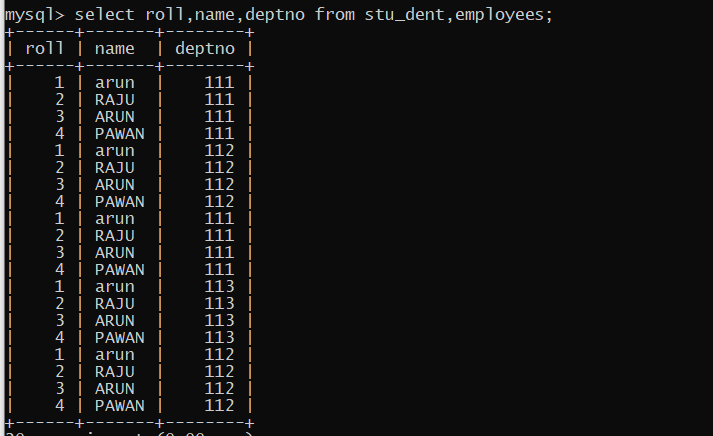

JOINS
SQL Joins are used to relate information in different tables. Joins are used to combine columns from different tables. The connection between tables is established through the WHERE clause, called SQL Join condition.
With Joins, the information from any number of tables can be accessed.
Syntax:-
Select tablel.column,table2.column,...,tableN.column FROM table2,tableN
WHER tablel.column1= table2.column2;
TYPES OF JOINS:-
In SQL Joins can be generally classified into following categories:
(i) Equi Join/ Inner join
(ii) Cartesian Join / Cross join
(iii) Outer Join /Right join
(iv)Self Join
(i) Equi Join/ Inner join
When two tables are joined together using equality of values in one or more columns they make an Equi join. Table prefixes are utilized to prevent ambiguity and the WHERE clause specifies the columns being joined. It is a simple SQL join condition which uses the
equal sign as the comparison operator.
(ii) Cartesian Join / Cross join
If a SQL join condition is omitted or if it is invalid the join operation will result
in a Cartesian product. The Cartesian product returns the number of rows equal to the product of all rows in all the tables being joined.
Example:-

(iii) Outer Join /Right join
This SQL join condition returns all rows from both tables which satisfy the join condition along with rows which do not satisfy the join condition from one of the tables.
The Outer join is mainly preferred in such cases; if there are any values in one table that do not have corresponding value(s) in the other. Such rows can be forcefully selected by using the Outer join symbol (+). It is used on one side of the join condition only. The corresponding columns for that row will have NULLS.
(iv) Self join
The Self join is mainly preferred to join a table with itself. This means that each row of the table is combined with itself and with every other row of the table. The self join can be viewed as a join of two copies of the same table. The table is not actually copied, but SQL performs the command as though it were.
The syntax of the command for joining a table to itself is almost the same as that for joining two different tables. To distinguish the column names from one another, aliases for the actual table name are used, since both the tables have the same name. Table name aliases are defined in the FROM clause of the query.